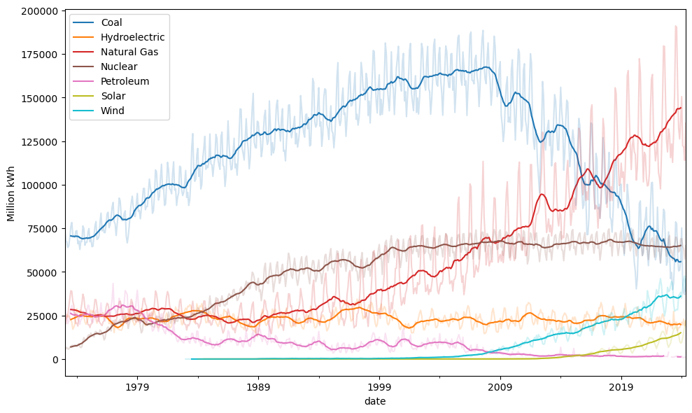
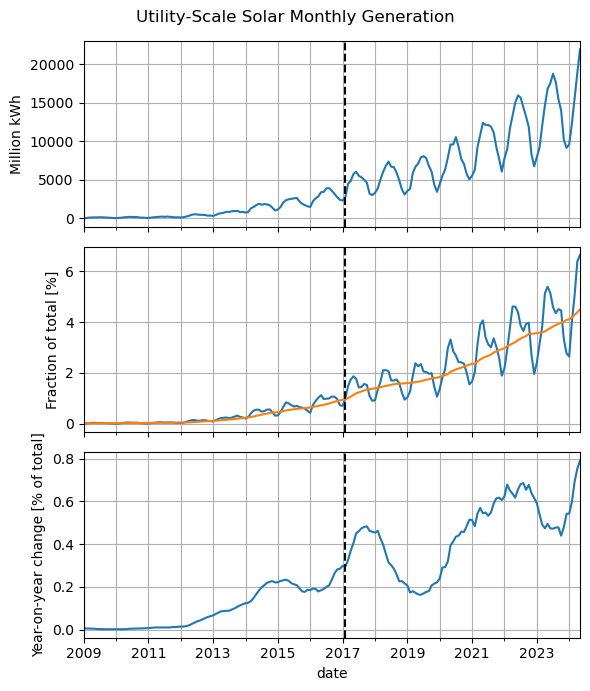
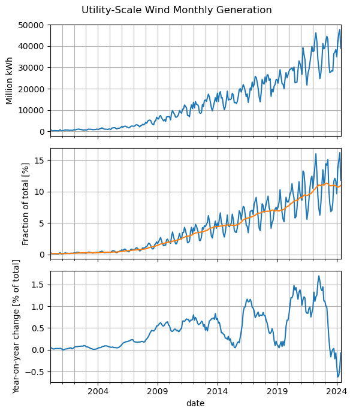
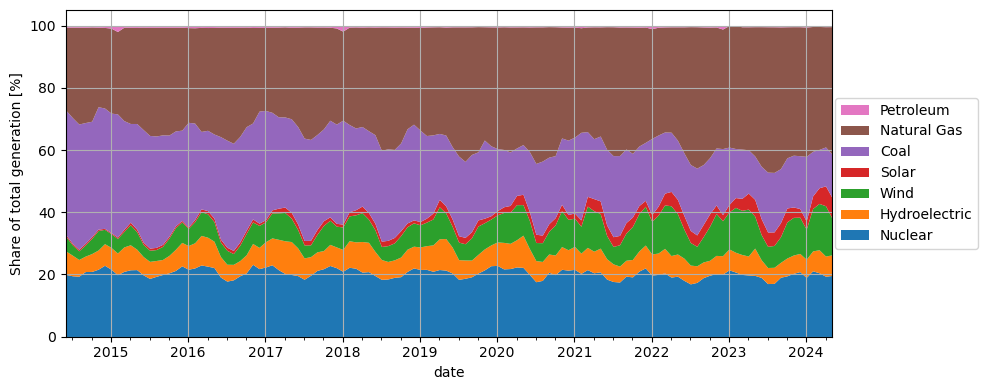
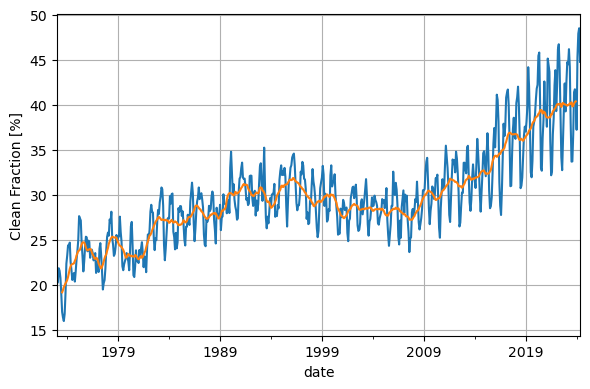
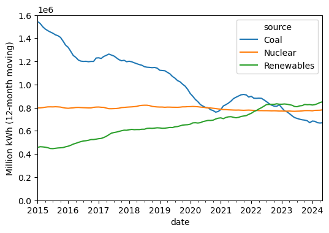
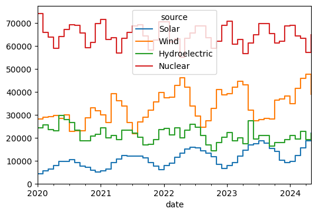

Climate Report¶
Additional time series data about climate change come in all the time. Here are some plots that I like to track.
I think that what is essential for this problem is a global consciousness,
a view that transcends our exclusive identifications with the generational
and political groupings into which by accident we have been born.
The solution to these problems requires a perspective that embraces the
planet and the future, because we are all in this greenhouse together.
Carl Sagan, https://youtu.be/Wp-WiNXH6hI?t=985
EIA Monthly: Electric Power Sector¶
Show code cell source
import pandas as pd
import numpy as np
import matplotlib.pyplot as plt
url = 'https://www.eia.gov/totalenergy/data/browser/csv.php?tbl=T07.02B'
df = pd.read_csv(url)
df = df.loc[~df['Description'].str.contains('Generation Total')]
df = df.loc[~df['YYYYMM'].astype(str).str.endswith('13')]
df['source'] = df['Description'].str.split(",").str[0].str.replace('Electricity Net Generation From ', '')
df['date'] = pd.to_datetime(df['YYYYMM'], format='%Y%m')
df2 = df.pivot(index='date', columns='source', values='Value')
df2 = df2.rename(columns={'Conventional Hydroelectric Power': 'Hydroelectric',
'Nuclear Electric Power': 'Nuclear'})
df2 = df2.replace('Not Available', np.nan).replace('Not Meaningful', np.nan).astype(float)
df2 = df2.loc[:, df2.max() > 5000] # only keep the main players
fractions = 100 * df2.divide(df2.sum(axis=1), axis=0).clip(lower=0)
fig, ax = plt.subplots(figsize=(10, 6))
df2.rolling(12, center=True).mean().plot(ax=ax, colormap='tab10')
ax.legend()
ax.set_ylabel('Million kWh')
fig.tight_layout()
df2.plot(ax=ax, alpha=0.2, colormap='tab10', legend=False)
plt.show()

Show code cell source
fig, axes = plt.subplots(3, 1, sharex=True, figsize=(6, 7))
fig.suptitle('Utility-Scale Solar Monthly Generation')
df2['Solar'].dropna().loc['2009':].plot(ax=axes[0])
axes[0].set_ylabel('Million kWh')
fractions['Solar'].loc['2009':].plot(ax=axes[1])
moving_average = fractions['Solar'].rolling(12).mean()
moving_average.loc['2009':].plot(ax=axes[1])
axes[1].set_ylabel('Fraction of total [%]')
yoy_change = moving_average - moving_average.shift(12)
yoy_change.loc['2009':].plot(ax=axes[2])
axes[2].set_ylabel('Year-on-year change [% of total]')
for ax in axes:
ax.axvline('2017-02-01', ls='--', c='k')
ax.grid(which='both')
fig.tight_layout()

Show code cell source
fig, axes = plt.subplots(3, 1, sharex=True, figsize=(6, 7))
fig.suptitle('Utility-Scale Wind Monthly Generation')
df2['Wind'].dropna().loc['2000':].plot(ax=axes[0])
axes[0].set_ylabel('Million kWh')
fractions['Wind'].loc['2000':].plot(ax=axes[1])
moving_average = fractions['Wind'].rolling(12).mean()
moving_average.loc['2000':].plot(ax=axes[1])
axes[1].set_ylabel('Fraction of total [%]')
yoy_change = moving_average - moving_average.shift(12)
yoy_change.loc['2000':].plot(ax=axes[2])
axes[2].set_ylabel('Year-on-year change [% of total]')
for ax in axes:
ax.grid(which='both')
fig.tight_layout()

Show code cell source
# reorder for plotting purposes
col_order = ['Nuclear', 'Hydroelectric', 'Wind', 'Solar',
'Coal', 'Natural Gas', 'Petroleum']
fractions = fractions[col_order]
fractions.iloc[-12*10:].plot.area(lw=0, figsize=(10, 4))
plt.ylabel('Share of total generation [%]')
handles, labels = plt.gca().get_legend_handles_labels()
plt.legend(reversed(handles), reversed(labels),
loc='center right', bbox_to_anchor=(1.2, 0.5))
plt.tight_layout()
plt.grid()

Show code cell source
clean = ['Solar', 'Wind', 'Hydroelectric', 'Nuclear']
clean_fraction = 100 * df2[clean].sum(axis=1) / df2.sum(axis=1)
clean_fraction.plot()
clean_fraction_rolling = 100 * (
df2[clean].sum(axis=1).rolling(12, center=True).sum() /
df2.sum(axis=1).rolling(12, center=True).sum()
)
clean_fraction_rolling.plot()
plt.ylabel('Clean Fraction [%]')
plt.tight_layout()
plt.grid()

Show code cell source
fractions.assign(clean_fraction=clean_fraction).tail(24)
| source | Nuclear | Hydroelectric | Wind | Solar | Coal | Natural Gas | Petroleum | clean_fraction |
|---|---|---|---|---|---|---|---|---|
| date | ||||||||
| 2022-06-01 | 18.119899 | 7.140738 | 9.305009 | 4.396890 | 20.124649 | 40.499868 | 0.412947 | 38.962537 |
| 2022-07-01 | 16.984118 | 6.040335 | 7.266166 | 3.863308 | 21.196885 | 44.292088 | 0.357100 | 34.153926 |
| 2022-08-01 | 17.461327 | 5.334941 | 6.261486 | 3.650367 | 21.474939 | 45.436719 | 0.380221 | 32.708121 |
| 2022-09-01 | 18.986310 | 5.048759 | 8.137286 | 3.932148 | 19.233807 | 44.211849 | 0.449840 | 36.104503 |
| 2022-10-01 | 19.771369 | 4.796682 | 10.975141 | 3.980029 | 18.047118 | 41.933071 | 0.496591 | 39.523221 |
| 2022-11-01 | 20.306741 | 5.832162 | 13.474558 | 2.731460 | 18.322058 | 38.877329 | 0.455693 | 42.344920 |
| 2022-12-01 | 20.111751 | 5.914089 | 11.250993 | 1.960395 | 21.226962 | 38.414282 | 1.121528 | 39.237228 |
| 2023-01-01 | 21.490761 | 6.723861 | 11.882365 | 2.404783 | 18.453646 | 39.044584 | NaN | 42.501770 |
| 2023-02-01 | 20.798191 | 6.356310 | 14.417961 | 3.144272 | 15.772944 | 39.510322 | NaN | 44.716734 |
| 2023-03-01 | 20.020015 | 6.403212 | 14.196719 | 3.844391 | 15.834793 | 39.316102 | 0.384768 | 44.464337 |
| 2023-04-01 | 19.848344 | 6.091896 | 15.077412 | 5.137460 | 13.934298 | 39.515978 | 0.394613 | 46.155112 |
| 2023-05-01 | 19.718305 | 8.767549 | 10.278141 | 5.396044 | 13.941305 | 41.537119 | 0.361538 | 44.160038 |
| 2023-06-01 | 19.066547 | 5.688755 | 8.078902 | 5.144297 | 16.822201 | 44.841807 | 0.357490 | 37.978502 |
| 2023-07-01 | 17.086490 | 5.159907 | 6.818513 | 4.588743 | 19.244678 | 46.713629 | 0.388040 | 33.653653 |
| 2023-08-01 | 17.145297 | 5.168479 | 7.013491 | 4.354006 | 19.125855 | 46.796143 | 0.396729 | 33.681273 |
| 2023-09-01 | 19.117041 | 4.778952 | 8.227253 | 4.511917 | 17.386428 | 45.545373 | 0.433036 | 36.635163 |
| 2023-10-01 | 19.564673 | 5.731125 | 11.618457 | 4.461753 | 16.118496 | 42.115691 | 0.389806 | 41.376008 |
| 2023-11-01 | 20.364625 | 5.891645 | 12.109000 | 3.333989 | 16.640254 | 41.298861 | 0.361626 | 41.699259 |
| 2023-12-01 | 20.930330 | 5.844283 | 11.649929 | 2.774494 | 16.976905 | 41.458384 | 0.365676 | 41.199035 |
| 2024-01-01 | 19.069335 | 5.831500 | 9.649185 | 2.646130 | 20.771108 | 41.557916 | 0.474827 | 37.196149 |
| 2024-02-01 | 21.184346 | 6.394614 | 13.646462 | 4.035275 | 14.328620 | 40.113670 | 0.297013 | 45.260697 |
| 2024-03-01 | 20.551733 | 7.408353 | 14.875901 | 5.048689 | 12.312165 | 39.509218 | 0.293941 | 47.884676 |
| 2024-04-01 | 19.447430 | 6.477188 | 16.167844 | 6.386713 | 12.519974 | 38.645704 | 0.355147 | 48.479175 |
| 2024-05-01 | 19.688226 | 6.623427 | 11.790929 | 6.643026 | 13.930003 | 40.987658 | 0.336731 | 44.745608 |
Show code cell source
rolling = df2.rolling(12).sum()
rolling['Renewables'] = rolling[['Solar', 'Wind', 'Hydroelectric']].sum(axis=1)
rolling.loc['2015':, ['Coal', 'Nuclear', 'Renewables']].plot()
plt.ylim(0, 1.6e6)
plt.ylabel('Million kWh (12-month moving)');

This page was last regenerated on:
Show code cell source
import datetime
datetime.date.today().strftime('%Y-%m-%d')
'2024-09-22'
df2.loc['2020':, clean].plot(drawstyle='steps-post')
plt.ylim(bottom=0);
